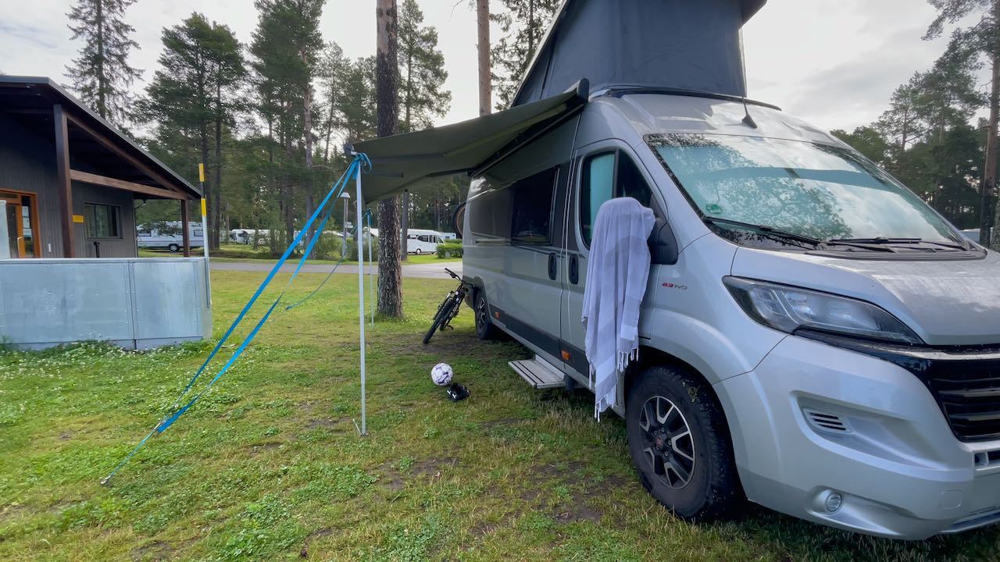

Täällä on Ruotsin parasta jäätelöä
Reissun ensimmäinen yö oli taas totuttelua matkustamiseen. Me yövyttiin Seinäjoen Ideaparkin vieressä lähes tyhjällä matkaparkilla. Meidän lisäksi alueella oli vain kaksi autoa. Kaupat olivat menneet kiinni ja tunnelma oli aavemaisen hiljainen.
Hyvin levätyn yön jälkeen ajoimme Vaasaan ja otimme sieltä lautan Uumajaan. Siellä meidän oli tarkoitus viettää pari päivää kaupunkiin tutustuen. Jatkuva sade sai meidät kuitenkin muuttamaan suunnitelmia. Lähdimme ajamaan rannikkoa pitkin kohti etelää.
Sadetta pakoon Östersundiin
Nukuimme yön Örnsköldsvikin keskustan tuntumassa olevassa matkaparkissa. Koska sade vain jatkui, suuntasimme heti aamupalan jälkeen eteenpäin. Heti kaupungin ulkopuolelta löysimme Fjällrävenin Outlet-myymälän. Siellä piti tietenkin poiketa, ennenkuin matka taas jatkui.

Kun seuraavan kerran alkoi kahvihammasta kolottamaan, pysähdyimme pienessä Bräcken kylässä. Kahvilan omistaja oli voittanut Ruotsin parhaimman jäätelöntekijän tittelin jo neljännen kerran peräkkäin. Jäätelöä piti siis saada ja kyllä se olikin sitten todella hyvää.
Jäätelön voimalla ajoimme Östersundin matkaparkkiin, joka oli harmittavasti aivan täynnä. Päätimme ajaa leirintäalueelle kysymään yösijaa. Sielläkin oli aivan täyttä, mutta saimme sähköttömän paikan huoltorakennuksen kulmalta. Sijainti oli meille itse asiassa aivan täydellinen. Akut olivat päivän ajon jälkeen täynnä ja me oltiin lähellä alueen kaikki palveluita.

Vaikka leirintäalueella oli paljon väkeä yö oli rauhallinen. Aamulla paistoi aurinko ja mietimme, että täällä voisi viihtyä pidempäänkin. Meillä oli kuitenkin muita suunnitelmia ja halusimme jatkaa seikkailua eteenpäin.